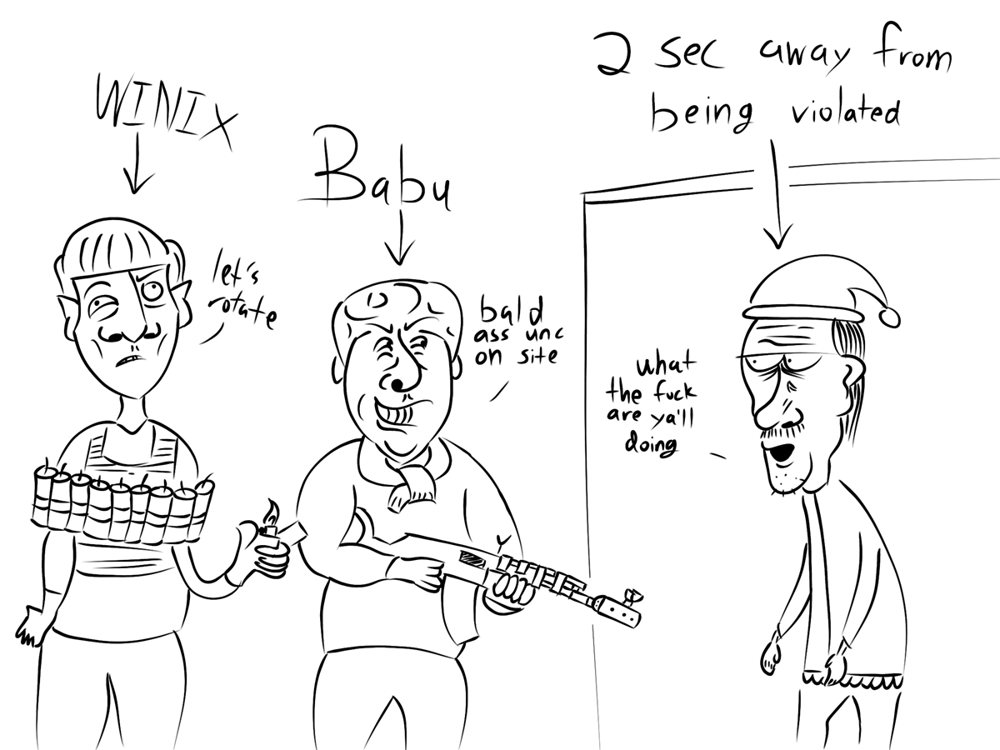

Late at night, mummified in my bed, I drifted off to sleep. Normally, I have this ability where my body wakes itself up on high alert like an anime character sensing danger. However, this time, I was exhausted after a day of engaging in a water fight. My senses were dulled. Taking advantage of my weakened state, two assholes decided to prank me with water guns, soaking me. Everything went red for the next few minutes as my survival instincts kicked in. Some might consider this a harmless prank, but for me, a matter of life and death. My inner gangster took hold of me, dodging like Neo in The Matrix. I remembered I was a diamond in 2018 Rainbow Six I started lean spamming as well. Needless to say, those fools never dared to mess with me again after witnessing their maker.
- "Despicable pieces of shit" Whispered when awakened.